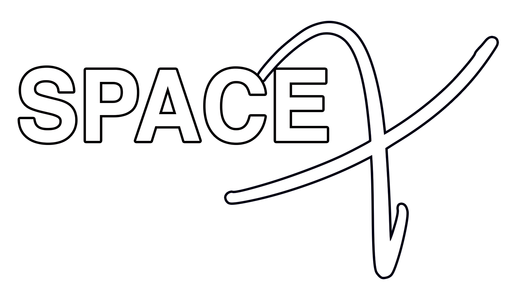

VIAJA A SATURNO
Saturno es un planeta particular. Para los científicos es considerado como uno de los planetas más interesantes de conocer de todo el sistema solar. Destaca que posee una densidad mucho menor que la del agua y está compuesto enteramente de hidrógeno, con un poco de helio y metano.
Pertenece a la categoría de gigantes gaseosos y tiene un color bastante peculiar que lo hace resaltar entre los demás. Es algo amarillento y dentro del mismo se combinan pequeñas bandas de otros colores. Muchos lo confunden con Júpiter pero no se relacionan para nada entre sí. Se diferencian claramente por el anillo. Los científicos presumen que sus anillos están hechos de agua, pero sólida como los icebergs, montañas de hielo o algunas bolas de nieve combinadas con algún tipo de polvo químico en particular.Lo más importante de todo esto e impactante para el que lo sabe, es que sólo se realiza en el ecuador del planeta.